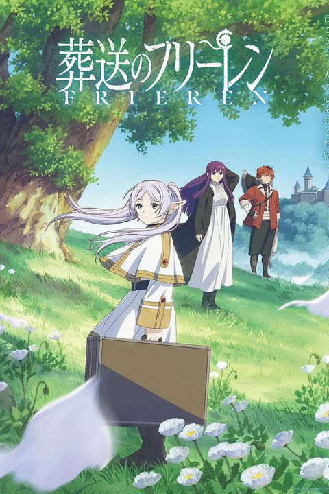
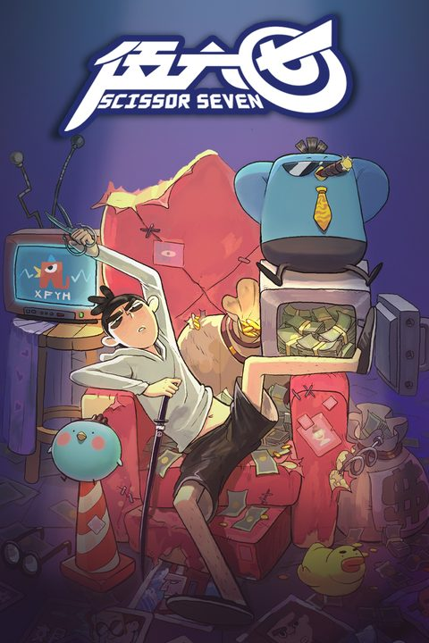

在球场换脑子。
校网球协会社长，组织训练，也参与校级比赛执裁。约球、聊装备都可以。
也因此做了一个天气助手 ↗Life / Field Notes
网球、摄影和剪辑，是数据之外的几种日常。喜欢带着相机压马路，也把一些喜欢的电影、书和歌留在这里。
上海出发，现于深圳实习。
街头、日落、旅途，还有偶然遇见的日常。
12 帧 · 点击放大打开大图后，可用左右方向键翻看，按 Esc 返回。
校网球协会社长，组织训练，也参与校级比赛执裁。约球、聊装备都可以。
也因此做了一个天气助手 ↗用 PR / 剪映剪辑，用 Lightroom / Photoshop 修图。曾任校园新闻部部长，参与官方公众号排版与美编。
看看做过的推文 ↗约球、摄影、剪辑、求职交流都欢迎。上海出发，目前在深圳实习；英语可作为交流语言，雅思 7.0。
打个招呼 ↗科幻、竞速、战争大片都看，番剧补日常；书架上科幻与推理居多。






从街头巷尾到海岸与雪场，镜头也跟着日常换场地。